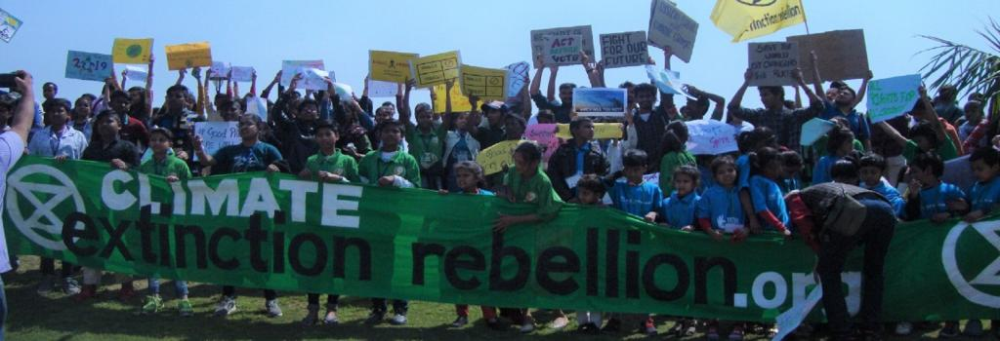

Youth in a country is the driving force of society with a keen interest in politics, science and technology. They are the reason why gig-economy is booming in the world. Youth are the most important and dynamic segment of the population in any country. It is believed that developing countries with large youth population could see tremendous growth, provided they invest in young people's education, health and protect and guarantee their rights.
SUMMER CAMP
- Enhanced Leadership Skills.
- Build Friendships and Learn Social Skills.
- Improved Decision-Making Skills
- Improved Communication Skills
Polio Awareness
- Maintaining community immunity through high quality National and Sub National polio rounds each year.
- To reduce risk of importation from neighbouring countries, international border vaccination is being provided through continuous vaccination teams (CVT) to all eligible children round the clock.
- All States and Union Territories in the country have developed a Rapid Response Team (RRT) to respond to any polio outbreak in the country.

Conducting Rallies
- They aspire for more freedom so that issues pertaining to henious crimes can be addressed.
- Youth are the most important and dynamic segment of the population in any country to raise awareness for such issues using their right to speech.
- Youth are expected to advance the current technology, education, politics, peace of the country by raising their voice for what's right.
Poster Making
- Posters can motivate the youth to learn a specific topic.
- They can help learners to focus on a certain idea, fact, event or process.
- Posters helps the youth to value the art in how it appeals to us and what it means to each person.
Cultural Activities
- These vanish stage fear
- Better academic performance
- Good understanding of time management
- Learn new skills
- Sense of responsibility
- Increase self-confidence
Social Service
- The students may also make the people aware of their basic human rights and duties.
- They can educate the women about the various laws which have been formulated for their safety and benefit.
- They should spread awareness for the right to education. They may spread awareness about sanitation.